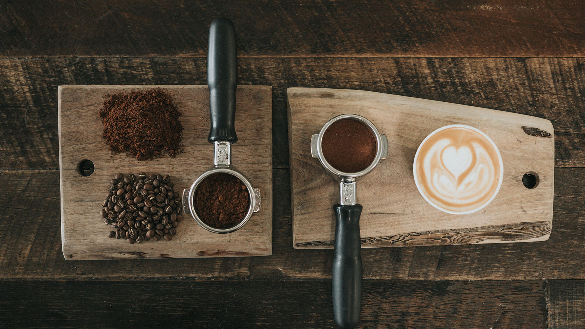

Espresso
Pour Over Coffee
Moka Pot
siphon
AeroPress
Turkey Coffee
「義式咖啡（Espresso）」這個詞在義大利文中，代表「壓力之下」，義式咖啡機的發明其實很有趣，是一位急性子的咖啡工程師，因為他等不及喝一杯滴漏式的咖啡，便發明了利用「壓力」、「高溫」快速進行萃取的咖啡方法，沒想到這種方式就開始廣為流傳了！
discover more
手沖咖啡的盛行，大大降低了我們在家自行沖煮咖啡的門檻。比起製作拿鐵等義式咖啡，需要動輒上萬元的咖啡機，手沖咖啡僅僅需要更低的預算便能入手。很容易找到能輕易入手的器具，而且選擇變化也很多，非常合適依照個人的喜好或心情，搭配出個人的風格。
discover more
義大利軍的營房裡，隨處可見各種義大利麵條、壓縮的脫水蔬菜、帕馬森起司（Parmesan Cheese）、葡萄酒等食物，甚至士兵們還會在飯後，以各自攜帶的小摩卡壺，為自己煮上一杯義式濃縮咖啡作為一餐的結束。就算是戰爭，也無法剝奪義大利人喝一杯咖啡的閒暇。
discover more
滴漏式咖啡壺的滴漏式咖啡（就是類似手沖）及法壓式咖啡壺的浸泡法，這兩個是天差地遠的沖煮方式，但是虹吸式咖啡，卻完美的結合滴漏及浸泡這兩種沖煮法，用這種裝置煮出的咖啡能夠同時發揮兩種咖啡壺煮出的特質。賽風壺看似簡單其實有著大大學問，它可是結合物理學的咖啡壺呢！
discover more
除了作為提親儀式中的一部份之外，因為土耳其咖啡烹煮的過程中不過濾咖啡渣，因此喝完後杯底會沉滿咖啡渣，土耳其人也會利用沉在杯底的渣做為占卜使用。土姑娘接下來會針對土耳其咖啡占卜寫一篇文章，敬請期待囉！
discover more